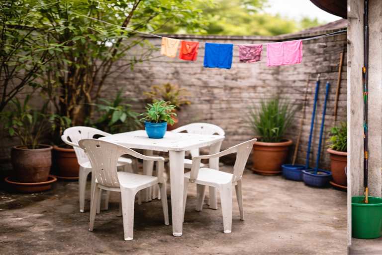
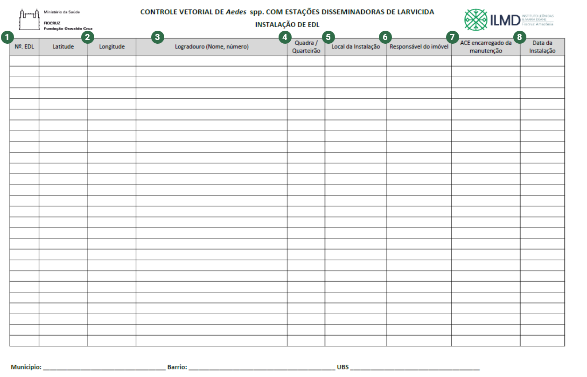

Módulo2/Aula1
Implantação da EDL
Para realizar a implantação das EDL nos locais onde existem possíveis focos para a reprodução dos mosquitos, a instalação das EDL’s nos imóveis dependerá, em primeiro lugar, da aceitação por parte do responsável do imóvel. Se o responsável aceitar, o profissional de campo deve informar todos os detalhes relevantes da estratégia das EDL, os compromissos e responsabilidades. Se o responsável não aceitar, o procedimento será repetido nas casas adjacentes.
Veja a seguir como ocorre o procedimento de montagem da Estação Disseminadora de Larvicida.
![Sequência com 7 fotos de como ocorre o processo de montagem da Estação Disseminadora de Larvicida. Na primeira imagem a foto de um pote de plástico transparente vazio, uma pessoa coloca um adesivo de identificação da Estação Disseminadora de Larvicida. Foto de um pote plástico transparente com água, aproximadamente três dedos abaixo da borda superior do pote, há uma mão com luva branca demonstrando essa marcação, um adesivo de identificação da Estação Disseminadora de Larvicida está colado no centro do pote. Foto de um pote plástico transparente com água e etiqueta de identificação da Estação Disseminadora de Larvicida, uma pessoa coloca um pano preto na água. Três fotos de uma pessoa demonstrando como manusear o tecido preto, primeiro esticá-lo de forma horizontal, na segunda foto ele está dobrado com as pontas unidas e na terceira continua dobrado simulando um círculo. Foto de um pote de plástico com água e adesivo de identificação da Estação Disseminadora de Larvicida, um pano preto está sendo colocado dentro do pote. Foto do pote de plástico transparente com o pano preto dentro da água, uma parte do pano está na borda do pote na parte externa, mantendo ao redor do pote os três dedos. Foto do pote de plástico transparente com água e tecido preto dentro e fora do pote, o tecido está preso por um clipe.](../assets/images/modulo2/aula1/img1.png)
PALAVRA DO ESPECIALISTA
Ficou com dúvidas na preparação da EDL? Assista ao vídeo do especialista.
Atenção para a montagem da tela impregnada no suporte da EDL:



Crédito: PixabyDepois da montagem finalizada, as EDL’s estão prontas para serem instaladas em áreas externas, como pátios, varandas, garagens ou terrenos fechados, e também dentro das residências, em cozinhas e área de serviço, por exemplo.
Para uma maior eficácia, é importante que o local onde a EDL for depositada possua as seguintes condições:
![Foto de uma cozinha com azulejos marrons, pia com bancada preta e cortina quadriculada em branco e preto, ao lado de um fogão. Alguns vasos de flores na parede e sobre a pia. Ao lado do fogão, na parede, um pano de prato. No chão, em frente ao fogão e pia, dois tapetes de fundo branco e desenho.
Foto de uma pequena lavanderia. Ao fundo, em uma parede laranja, tanque e máquina de lavar. À esquerda, em uma parede azul, um armário e alguns potes. À direita, alguns baldes, cesto e uma tábua de passar roupa dobrada e encostada na parede de cor cinza.
Foto de uma EDL (pote de plástico transparente com pano preto e etiqueta) colocada ao lado de plantas e pedrinhas decorativas.
Foto da parte externa de uma casa com um pequeno gramado lateral à entrada da garagem coberta.](../assets/images/modulo2/aula1/img6.png)
Importante ressaltar que as EDL’s não apresentam risco aos residentes nem aos animais de estimação dos imóveis onde são instaladas, mas os Agentes de Combate às Endemias (ACE) ou o profissional encarregado, devem repassar algumas orientações importantes para a manutenção das Estações Disseminadoras de Larvicida (EDL).
Orientações para manutenção da EDL
Informe ao residente do imóvel que, uma vez por mês, o profissional de campo visitará o imóvel onde está instalada a Estação Disseminadora de Larvicida, para verificar o nível de água, o estado da EDL e trocar a tela impregnada com o larvicida.
O residente deverá ser informado que precisará revisar, semanalmente, a EDL e completar com água quando for necessário. Lembrar de não jogar água na tela, somente no centro da EDL para não lavar o piriproxifem impregnado.
O profissional de campo deverá lembrar ao residente de comunicar aos outros moradores do imóvel sobre as EDL’s instaladas para evitar atrasos na manutenção da EDL por parte do profissional de campo, descarte da EDL ou utilização da EDL para outros fins.
No momento da implantação é necessário preencher a planilha de instalação que subsidiará as informações necessárias para o acompanhamento e a manutenção das EDL’s para fins de registro, conforme tabela a seguir. Passe o mouse sobre os números para conhecer as informações de registro de instação das EDL’s.
Registro de instalação de estações disseminadoras de larvicida

As informações devem ser legíveis. O preenchimento correto das informações facilitará a logística da manutenção das EDL’s, caso tenha troca ou ausência do ausência do profissional encarregado da visita, diminuindo o tempo e gastos operacionais de visita ou deslocamento adicionais.